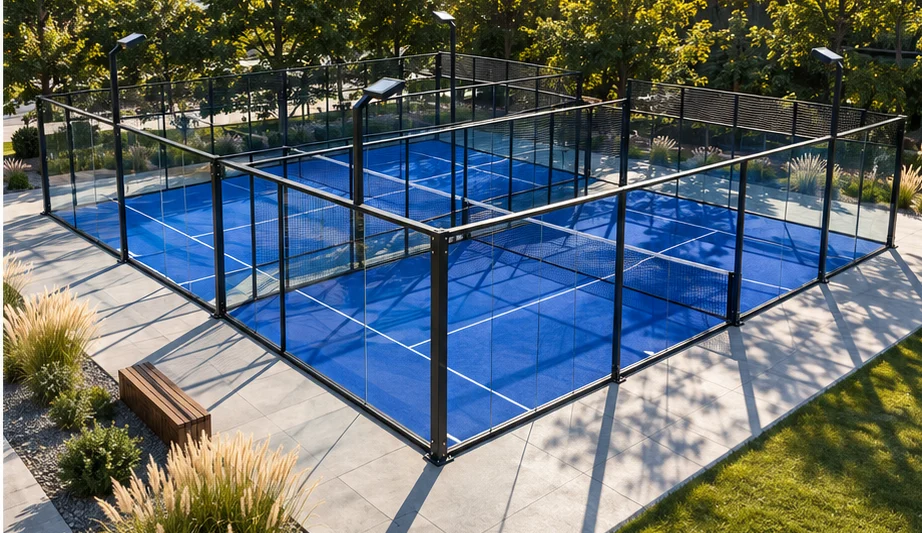

Планировка
Увязываем расположение кортов с проходами, входами и соседними функциями участка.
Направление 03 / 07
Размещаем отдельный корт или группу кортов так, чтобы площадкой было удобно пользоваться игрокам, зрителям и персоналу.

Состав работ
Увязываем расположение кортов с проходами, входами и соседними функциями участка.
Согласуем границы площадки, основание и ограждения с выбранной системой корта.
Прорабатываем размещение светильников и их связь с конструкцией и соседними зонами.
Исходные данные
Размеры участка, число кортов, формат эксплуатации и требования к освещению.
Составить бриф